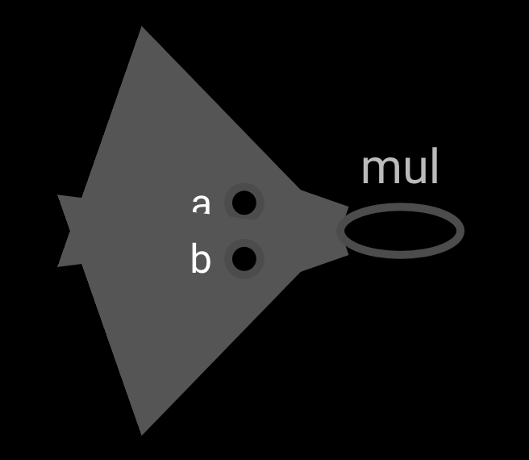
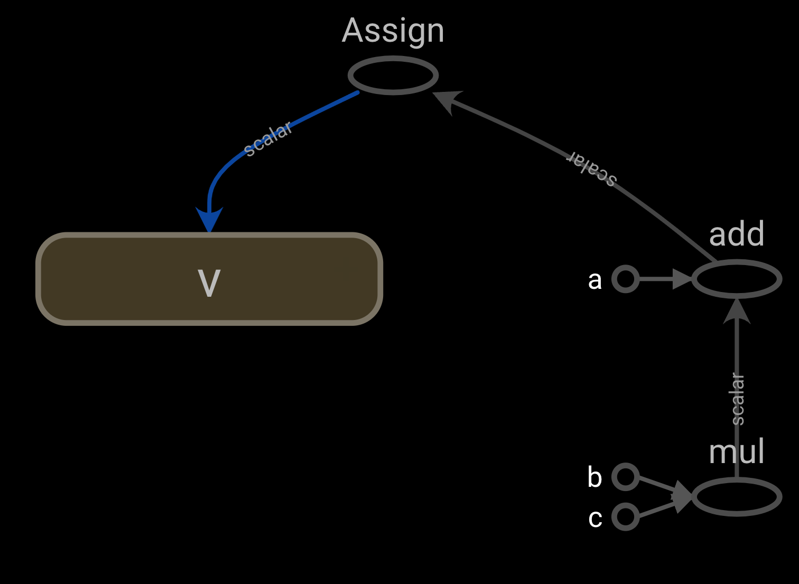
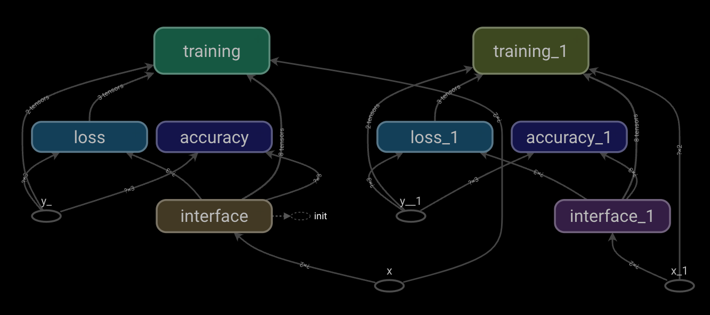
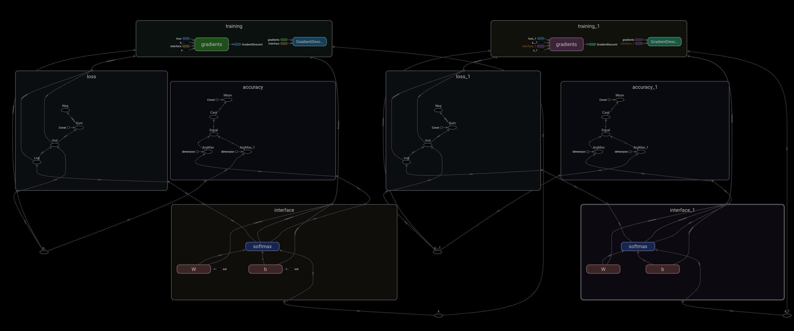
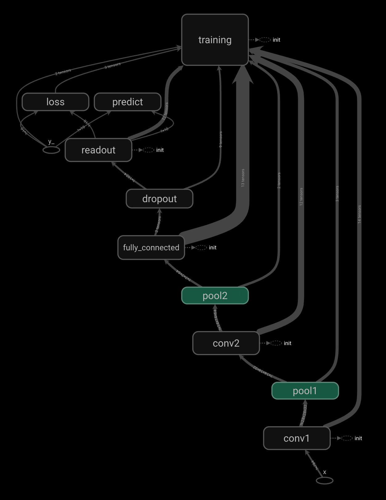

Python - Tensorflow
이 페이지는 다음에 대한 공부 기록입니다
JAVA(자바), Python(파이썬) 기반의
AI 활용 응용 소프트웨어 개발자 양성 과정
2021.11.10. ~ 2022.05.18.
찾으시는 정보가 있으시다면
주제별reference를 이용하시거나
우측 상단에 있는 검색기능을 이용해주세요
102일차 수업
tensorboard
import tensorflow.compat.v1 as tf
tf.disable_v2_behavior()
a = tf.constant(20, name= ‘a’)
b = tf.constant(20, name= ‘b’)
mul_op = a * b
sess = tf.Session()
# tensorboard용 log 파일 생성
tw = tf.summary.FileWriter(‘logs파일 경로’, graph=sess.graph)
print(sess.run(mul_op))
터미널에 tensorboard --logdir= ‘logs 경로’ 입력 후 localhost:6006 접속

import tensorflow.compat.v1 as tf
tf.disable_v2_behavior()
a = tf.constant(20, name= ‘a’)
b = tf.constant(20, name= ‘b’)
c = tf.constant(20, name= ‘c’)
b = tf.Variable(0, name= ‘v’)
calc_op = a + b * c
assign_op = tf.assign(v, calc_op)
sess = tf.Session()
tw = tf.summary.FileWriter(‘logs파일 경로’, graph=sess.graph)
print(sess.run(calc_op))
print(sess.run(v))

scope
그래프 볼때 구조 파악을 편하게 하기 위해 스코프 단위로 이름을 지어준다
with tf.name_scope(‘스코프 이름’) as scope:
해당 scope로 분류할 코드
101일차 수업 bmi 분석 scope 구분
 
import tensorflow.compat.v1 as tf
tf.disable_v2_behavior()
from tensorflow.keras.datasets import mnist
from tensorflow.keras import utils
(X_train, y_train), (X_test, y_test) = mnist.load_data()
X_train = X_train.reshape(60000, 784).astype('float32')
X_test = X_test.reshape(10000, 784).astype('float')
X_train /= 255
X_test /= 255
y_train = utils.to_categorical(y_train, 10)
y_test = utils.to_categorical(y_test, 10)
pixels = 28 * 28 # 28*28 그림 이미지 크기
nums = 10 # 0 ~ 10 숫자 의미
x = tf.placeholder(tf.float32, shape=(None, pixels), name='x') # 이미지를 담을 공간
y_ = tf.placeholder(tf.float32, shape=(None, nums), name='y_') # 이미지를 담을 공간
# 함수 4개 생성
# 가중치 초기화 함수
def weight_variable(name, shape):
W_init = tf.truncated_normal(shape, stddev=0.1)
W = tf.Variable(W_init, name='W_' + name)
return W
# 바이어스 초기화 함수
def bias_variable(name, size):
b_init = tf.constant(0.1, shape=[size])
b = tf.Variable(b_init, name='b_' + name)
return b
# 합성곱 계층 만드는 함수 : 특징을 찾아 추출하는 층, 일부를 가중치에 대입하여 특징을 추출
# conv2d : 합성곱을 해주는 함수
def conv2d(x, W):
return tf.nn.conv2d(x, W, strides=[1, 1, 1, 1], padding='SAME')
# 폴링층 계층 만드는 함수 : 합성곱층에서 찾은 특징을 축소하는 층, (최대 풀링, 평균풀링), 특징을 유지한 채 축소해주는 층
def max_pool(x):
return tf.nn.max_pool(x, ksize=[1, 2, 2, 1], strides=[1, 2, 2, 1], padding='SAME')
# 합성곱층1
with tf.name_scope('conv1') as scope:
W_conv1 = weight_variable('conv1', [5, 5, 1, 32])
b_conv1 = bias_variable('conv1', 32)
x_image = tf.reshape(x, [-1, 28, 28, 1])
h_conv1 = tf.nn.relu(conv2d(x_image, W_conv1) + b_conv1)
# 풀링층1
with tf.name_scope('pool1') as scope:
h_pool1 = max_pool(h_conv1)
# 합성곱층2
with tf.name_scope('conv2') as scope:
W_conv2 = weight_variable('conv2', [5, 5, 32, 64])
b_conv2 = bias_variable('conv2', 64)
h_conv2 = tf.nn.relu(conv2d(h_pool1, W_conv2) + b_conv2)
# 풀링층2
with tf.name_scope('pool2') as scope:
h_pool2 = max_pool(h_conv2)
# 전결합층
with tf.name_scope('fully_connected') as scope:
n = 7 * 7 * 64
W_fc = weight_variable('fc', [n, 1024])
b_fc = bias_variable('fc', 1024)
h_pool2_flat = tf.reshape(h_pool2, [-1, n])
h_fc = tf.nn.relu(tf.matmul(h_pool2_flat, W_fc) + b_fc)
# 드롭아웃 설정
with tf.name_scope('dropout') as scope:
keep_prob = tf.placeholder(tf.float32)
h_fc_drop = tf.nn.dropout(h_fc, keep_prob)
# 출력층 --- (※12)
with tf.name_scope('readout') as scope:
W_fc2 = weight_variable('fc2', [1024, 10])
b_fc2 = bias_variable('fc2', 10)
y_conv = tf.nn.softmax(tf.matmul(h_fc_drop, W_fc2) + b_fc2)
# 모델 학습시키기 --- (※13)
with tf.name_scope('loss') as scope:
cross_entoropy = -tf.reduce_sum(y_ * tf.log(y_conv))
with tf.name_scope('training') as scope:
optimizer = tf.train.AdamOptimizer(1e-4)
train_step = optimizer.minimize(cross_entoropy)
# 모델 평가하기 --- (※14)
with tf.name_scope('predict') as scope:
predict_step = tf.equal(tf.argmax(y_conv, 1), tf.argmax(y_, 1))
accuracy_step = tf.reduce_mean(tf.cast(predict_step, tf.float32))
# feed_dict 설정하기 --- (※15)
def set_feed(images, labels, prob):
return {x: images, y_: labels, keep_prob: prob}
# 세션 시작하기 --- (※16)
with tf.Session() as sess:
sess.run(tf.global_variables_initializer())
# TensorBoard 준비하기
tw = tf.summary.FileWriter('logs 파일 경로’, graph=sess.graph)
# 테스트 전용 피드 만들기
test_fd = set_feed(X_test, y_test, 1)
# 학습 시작하기 ---- (※17)
for step in range(200):
f = step * 50
e = (step + 1) * 50
# print(f,e)
fd = set_feed(X_train[f:e], y_train[f:e], 0.5)
_, loss = sess.run([train_step, cross_entoropy], feed_dict=fd)
if step % 10 == 0:
acc = sess.run(accuracy_step, feed_dict=test_fd)
print("step=", step * 50, "loss=", loss, "acc=", acc)
# 최종적인 결과 출력하기
acc = sess.run(accuracy_step, feed_dict=test_fd)
print("정답률 =", acc)
